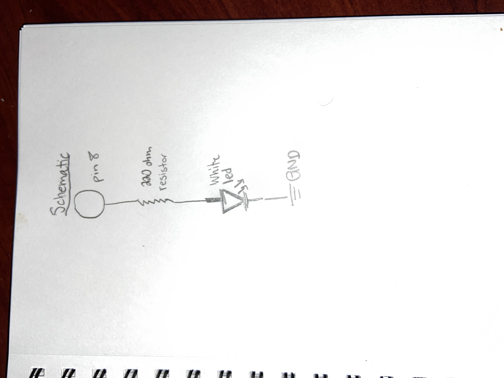

Assignment 2: Fade!

^A picture of the circuit.
Here is all the documentation for assignment 2!
Below is the GIF of the circuit running.

Below is an image of the schematic

The resistance was figured out by using the equation V=IR, [ 5V = 0.4A * R ] -> 125, nearest resistor is the 220 ohms.
Below is a snippet of the code used in Arduino.
// the setup function runs once when you press reset or power the board
int ledWhite = 8; //setting this to pin 8
int button = 7; // button set to pin 5
const int fade = 5; // fade counter
void setup() {
pinMode(ledWhite, OUTPUT); //
pinMode(button, INPUT);
digitalWrite(ledWhite, LOW);
}
void loop() {
if(digitalRead(button) == HIGH) {
delay(15); // softwardebounce
if(digitalRead(button) == HIGH){ // if button is pressed
fadeLights(); // calling fadeLights
}
} else {
digitalWrite(ledWhite, HIGH); // if button is not pressed
}
}
void fadeLights(){
for( int i=255; i>=0; i--) {
analogWrite(ledWhite, i); // starts on the white since there is only one led
for( int y = 0; y < 1000; y++){
// if button is released
if (digitalRead(button) == LOW) {
return;
}
}
}
// this is similar to the above but strictly for the white led
for( int i=0; i<=255; i++) {
analogWrite(ledWhite, i);
for( int y = 0; y < 1000; y++){
// if button is released
if (digitalRead(button) == LOW) {
return;
}
}
}
}